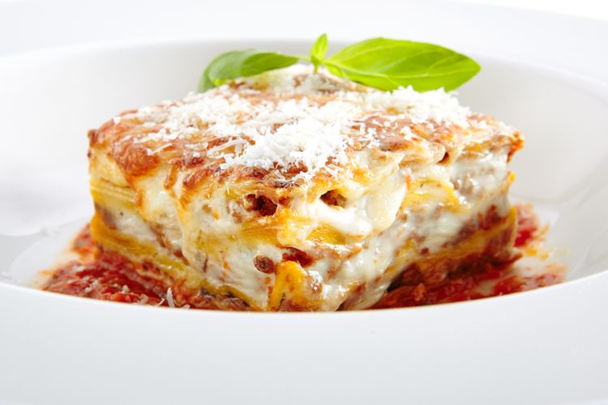

Makanan terbaik yang cocok dimakan saat musim hujan
Lasagna bisa dibuat menjadi makanan pedas atau manis.
Lasagna juga mudah sekali dibuat.
Ingredients
- Mie Lasagna
- Telur
- Air mendidih
- Bawang
Recipe instructions
- Iris bawang
- Masukkan mie kedalam air mendidih
- Siapkan bumbu di atas piring
- Masukkan telur kedalam mie
- Tiriskan mie, letakkan diatas piring
- Campur hingga merata dengan bumbu
Kembali ke atas
Kembali ke menu